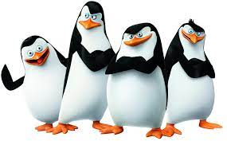

In the story, the penguins all originated from Antartica. As babies, the penguins were separated from the colony then transported to Central Park Zoo located in New York City. In the first movie, Madagascar, the penguins were support characters that help aid the escape from the zoo. Later on they get their own backstory and make friends along their adventures in Madagascar such as: King Julien, Mort, and Maurice. The penguins have many zoo friends and have fun little antics with each other.

Penguins of Madagascar clip
- Skipper
- Kowalski
- Rico
- Private
Since they were young, the four of them developed their teamwork skills in stealth operations with each member having a strong talent. For example, Skipper is the leader, Kowalski is the brains, Rico is the wild card, and Private is the naive young brother. They made their exhibit into a base of operations with various passages and equipment. The penguins have a close brotherhood and would always support one another no matter what. This shows how they are not only just talented on the field but they also have a lot of compassion.
| Name | Strength | Speed | Leadership | Humor |
|---|---|---|---|---|
| Skipper | 9/10 | 7/10 | 10/10 | 8/10 |
| Kowalski | 5/10 | 7/10 | 8/10 | 7/10 |
| Rico | 10/10 | 8/10 | 5/10 | 9/10 |
| Private | 5/10 | 6/10 | 4/10 | 8/10 |